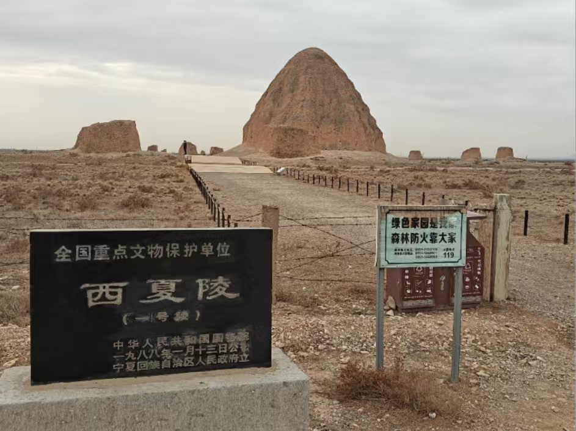

宁夏风景
宁夏拥有壮丽的自然风光，如神秘的西夏王陵、宁静的沙湖以及壮观的贺兰山等，吸引着众多游客前来观赏。
宁夏美食
宁夏美食独具特色，手抓羊肉、羊杂碎、油香等都是当地的招牌美食，口感鲜美，让人回味无穷。
宁夏文化
宁夏是一个多民族聚居的地方，回族文化在这里熠熠生辉。传统的回族服饰、精美的清真寺建筑以及独特的民俗节庆都展现了宁夏深厚的文化底蕴。
宁夏拥有壮丽的自然风光，如神秘的西夏王陵、宁静的沙湖以及壮观的贺兰山等，吸引着众多游客前来观赏。
宁夏美食独具特色，手抓羊肉、羊杂碎、油香等都是当地的招牌美食，口感鲜美，让人回味无穷。
宁夏是一个多民族聚居的地方，回族文化在这里熠熠生辉。传统的回族服饰、精美的清真寺建筑以及独特的民俗节庆都展现了宁夏深厚的文化底蕴。